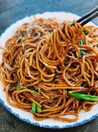

Fried Noodles

This dish was favored from Chow mein, Chinese noodles, and was requested to be brought by Chinese migrants
to Indonesia, Malaysia and Singapore. Fried noodles are also similar to Yakisoba from Japan. However, fried
noodles have finished being integrated into Indonesia’s culinary culture. For example, fried noodles add
sweet soy sauce as an important ingredient because that’s how indonesian people in general they were sweet
(nice and friendly) and had an exotic skin color just like sweet soy sauce. To suit the Indonesian people
who are mostly Muslims, fried noodles usually do not use pork or lard. Usually fried noodles use shrimp,
chicken or beef.
Ingredients:
- 1 pack of egg noodle
- 750 ml water
- 7 tbsp sweet soy sauce
- 4 tbsp olive oil or regular oil
- 6 cloves garlic
- 12 piece chili or as you like
- 2 tsp salt
- 3 eggs
- 2 tbsp white ground pepper
- 1 cube maggi or knorr (chicken stock powder)
- 1 pack bok choy
- 1 small red onion
- 6 piece candlenut
- 4 stalks scallion slice it as you like
Steps:
- Prepare a pan with 750 ml water and boil the egg noodle for about 2 or 3 minutes add olive oil and stir
it (so the noodle is not sticky) lift and set aside
- Blend the seasoning : onion, garlic, chili, and candlenut
- Scramble the eggs with a little salt and set aside
- After the noodle cool enough take the noodle and add sweet soy sauce then stir it until the noodles had
a perfect brown color
- Prepare a pan with 3 tbsp olive oil, add the blend seasoning stir it until it had a very good smell and
add bok choy (if you like add beef, shrimp, chicken, or sausage add at this time) then stir it until
bok choy half cooked add the noodle and scramble egg then keep stir it well.
- Add salt, maggi (chicken stock powder), and white ground pepper then mix it well
- Taste it and correct the taste then add scallion mix it well
- Serve the fried noodle with some shrimp crackers or fish crackers.
Home